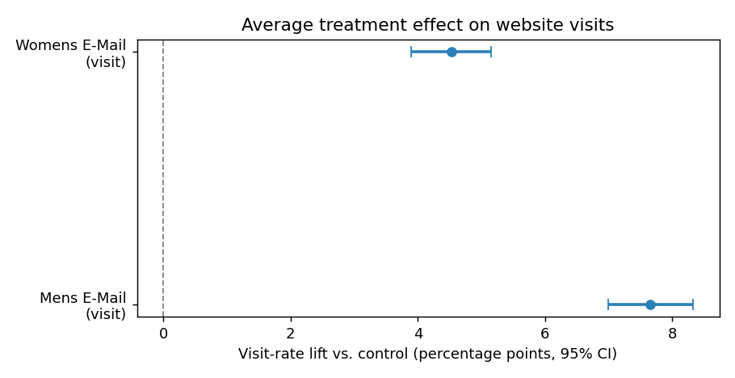

The decision behind the data
Two promotional emails — one for men's merchandise, one for women's — each lift sales on average. The naive read is "send both to everyone." This analysis shows that read is wrong for one of the two campaigns, and quantifies the better policy.
The recommendation
| Campaign | Avg. visit lift (95% CI) | Heterogeneity | Policy |
|---|---|---|---|
| Men's email | +7.66pp [+7.00, +8.32] | Low — interactions n.s. after FDR | Contact broadly — targeting adds nothing |
| Women's email | +4.52pp [+3.89, +5.16] | High — T×affinity p < 1e-4 | Target the ~59% with affinity → ~2× net value, 415 fewer contacts / 1,000 |
Net-value figures use illustrative economics ($2 / incremental visit, $0.06 / contact ⇒ 3pp break-even). The qualitative call is robust to the exact prices.
Eight layers, one script
hillstrom_ab_analysis.py runs the full pipeline top to bottom, writes RESULTS.md, and saves seven figures. Each layer maps to something experimentation interviewers actually probe.
The parts worth reading
Three excerpts that carry the statistical weight. Full source in hillstrom_ab_analysis.py.
Qini curve & coefficient (uplift ranking quality)
# sort customers by predicted uplift, accumulate treated vs. control response def qini_curve(y, treat, score): order = np.argsort(-score, kind="mergesort") y, t = y[order], treat[order] cum_t, cum_c = np.cumsum(t), np.cumsum(1 - t) cum_yt, cum_yc = np.cumsum(y*t), np.cumsum(y*(1 - t)) ratio = np.where(cum_c > 0, cum_t/cum_c, 0.0) qini = cum_yt - cum_yc*ratio # control responses re-scaled to treated size frac = np.arange(1, len(y)+1)/len(y) total = cum_yt[-1] - cum_yc[-1]*(cum_t[-1]/cum_c[-1]) qini_coef = TRAPEZOID(qini, frac) - TRAPEZOID(frac*total, frac) return frac, qini, frac*total, qini_coef
IPW policy value + cost-sensitive targeting (Layer 7)
# treatment was randomized => propensity p is a known constant => unbiased p = tte.mean() def ipw_value(policy): w = np.where(policy == 1, (tte == 1)/p, (tte == 0)/(1 - p)) return (w * yte).mean() # reduces to mean(treated)/mean(control) at the extremes breakeven = COST_PER_EMAIL / VALUE_PER_VISIT # uplift that pays for a contact pi = (score > breakeven).astype(int) # contact only if it pays nv = ((ipw_value(pi) - ipw_value(zeros))*VALUE_PER_VISIT - pi.mean()*COST_PER_EMAIL) * 1000 # net value / 1,000, incremental only
Lin (2013) covariate-adjusted ATE (Layer 4)
# center covariates and fully interact with T => the T coefficient is the ATE, # with strictly-not-larger variance than the unadjusted diff-in-means m1 = smf.ols("visit ~ T + recency_c + history_c + ... " "+ C(zip_code) + C(channel) + T:recency_c + T:history_c + ...", data=sub).fit(cov_type="HC1") var_reduction = 1 - (m1.bse["T"]**2) / (m0.bse["T"]**2)
What the data actually says
All figures are generated by the script. If they don't render, open this file from inside the repo (they live in figures/).


| Women's email — subgroup | Visit lift | Read |
|---|---|---|
| Prior women's-merch buyer | +7.31pp | email is relevant → strong response |
| No women's-merch history | +1.11pp | near-inert |
| Prior men's-merch buyer | +2.18pp | weak — wrong catalogue |
| No men's-merch history | +7.40pp | strong |


| Policy (net value / 1,000) | Men's email | Women's email |
|---|---|---|
| Blanket (contact all) | $+80.76 | $+16.90 |
| Uplift-targeted | $+78.29 | $+33.85 |
| Verdict | contact broadly | target ~59%, −415 contacts |


Interview prep
Every answer is tied to something in this project, not a textbook. Click to expand.